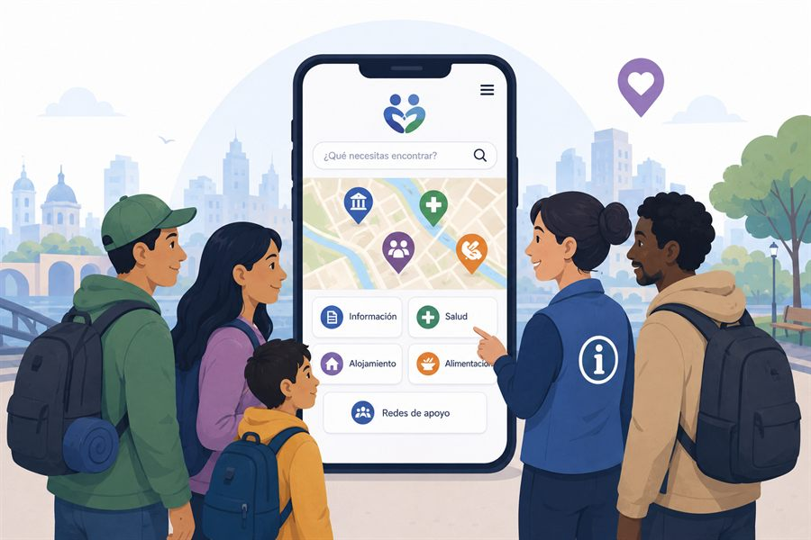
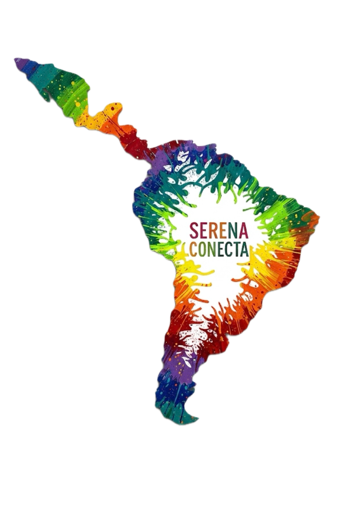
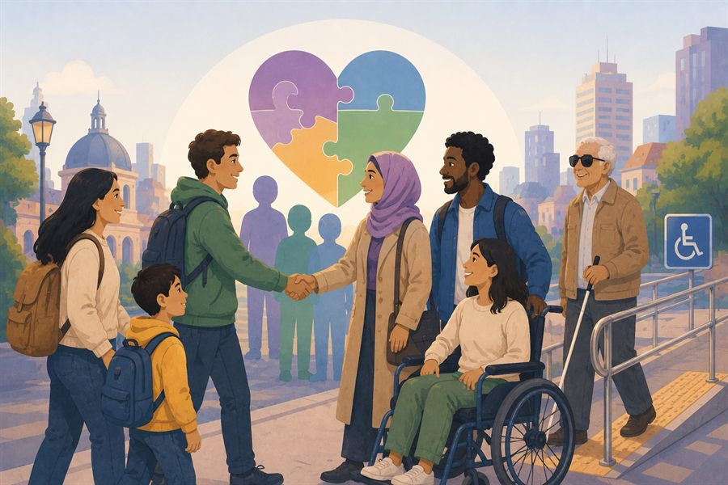
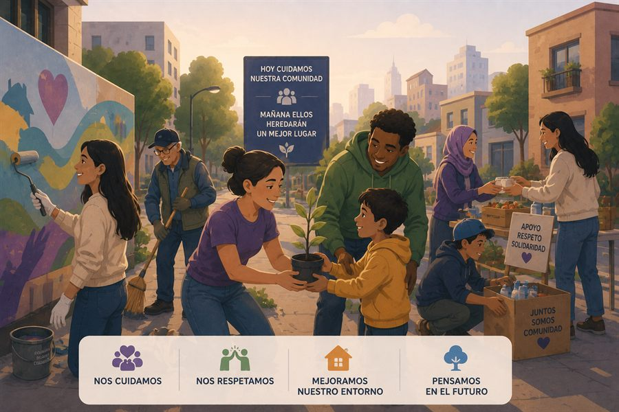

Justicia
Promovemos el acceso equitativo a la información y a las redes de apoyo, con una cultura de respeto y responsabilidad social.



Somos estudiantes de Ingeniería Civil Industrial de la Universidad de La Serena, quienes actualmente se encuentran buscando crear este proyecto de creación de valor compartido mediante apoyo y ayuda a la comunidad migrante de la ciudad de La Serena, con el propósito de conseguir una ciudad multicultural.

Brindamos orientación y recursos a quienes buscan nuevas oportunidades.
Descubre los lugares, historias y atractivos que nos hacen únicos.
Damos visibilidad a las historias, los aportes y las necesidades de la comunidad migrante.
Conecta, participa y sé parte de una comunidad que transforma.
En Serena Conecta creemos que la información abre puertas. Reunimos en un solo lugar las redes de apoyo, los atractivos y transporte de La Serena, para que cada persona pueda orientarse, participar y sentirse parte de ella. Queremos fomentar el sello multicultural de la ciudad de La Serena, aportando para que la ciudad sea más equitativa, justa e inclusiva con la diversidad cultural. Queremos que las futuras generaciones se encuentren felices y orgullosas de vivir en nuestra ciudad.
La diversidad cultural es una fuerza motriz del desarrolloUNESCO
Promovemos el acceso equitativo a la información y a las redes de apoyo, con una cultura de respeto y responsabilidad social.

Valoramos la diversidad de quienes llegan y de quienes acogen, y trabajamos por una ciudad sin barreras.

Cuidamos nuestro entorno y promovemos un desarrollo que también beneficie a las generaciones futuras.

En esta plataforma podrán encontrar dos mapas. El primero “Apoyo al migrante”, el cual cuenta con diversas organizaciones que ofrecen una diversidad de ayuda a la comunidad, tanto públicas como privadas, además de instituciones del área de salud a las cuales pueden acceder. El segundo “Ruta turística” está enfocado a entregar los puntos principales de atracción turística de nuestra ciudad, donde encontrarán el detalle de cada uno de ellos.
Busca una institución en el buscador o haz click en un marcador del mapa.
Haz click en un punto de la ruta turística para ver su información.
Selecciona una línea para ver su recorrido completo y todas sus paradas en el mapa.
Marca dónde estás, elige a dónde quieres ir, y te decimos qué micro tomar, en qué paradero subirte y dónde bajarte.
Toca un punto del mapa o usa «Micros cerca de mí», y aquí verás las líneas más cercanas.
Completa los pasos 1 y 2, y aquí verás qué micros te sirven para ese viaje.
¿Tienes una sugerencia para mejorar la plataforma o detectaste algo que podemos arreglar? Cuéntanos.